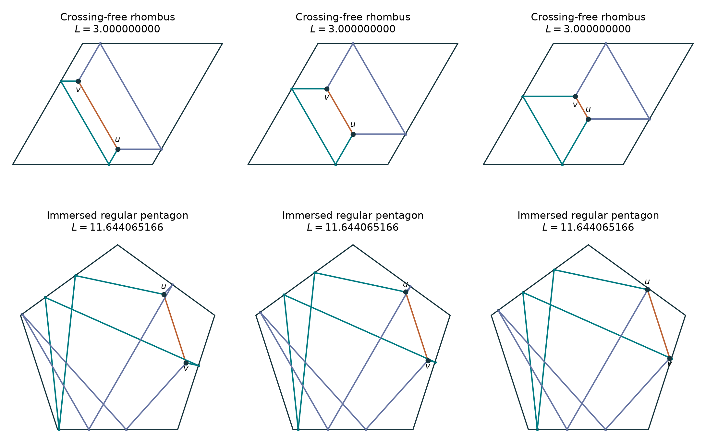

Reproducing and testing the continua
Theta nets in
parallelograms and pentagons
Constant-length families occur in the tested parallelograms and in a regular pentagon. Crossing restrictions matter: the rhombus has a crossing-free family, while the regular-pentagon witness displayed here is immersed.
The model has two free interior junctions, equal-weight angles \(120^\circ\), and ordinary specular reflections at straight polygon sides. No anchor, equal-edge-length constraint, or prescribed reflection point is imposed.
01 / An actual continuation
Move the junctions
Loading verified families.
The slider follows an affine solution family with the same reflection words. Corresponding bounce coordinates are affine functions of the parameter, so the continuation between the checked frames preserves the path directions and reflection law. Corner hits, collapsed edges, coincident bounces, and intermediate junction visits bound the continuation chamber.
02 / The most obvious examples, then perturbations
What the experiments found
| Region | Verified family | Crossing-free witness |
|---|---|---|
| Unit square | Two parameters; \(L\approx3.863703305\) | None found in the bounded search |
| Rectangle of height \(3\sqrt3/4\) | Two parameters; \(L\approx4.444097209\) | None found in the bounded search |
| Unit-side rhombus, angle \(\pi/3\) | Two parameters; exactly \(L=3\) | Yes, with changing individual edge lengths |
| Sheared parallelogram | Two parameters; \(L\approx3.787157586\) | None found in the bounded search |
| Regular pentagon, circumradius \(1\) | Two parameters; \(L\approx11.644065166\) | None found with up to five reflections per non-direct edge |
| House-shaped pentagon | Two parameters; \(L\approx8.468341805\) | None found in the bounded search |
| Pentagon with one vertex perturbed | No witness in the baseline search | No witness in the baseline search |
The sheared parallelogram has vertices \((0,0),(1,0),(3/2,1),(1/2,1)\). The house-shaped pentagon has vertices \((0,0),(2,0),(2,1),(1,2),(0,1)\). The regular pentagon is centered at the origin with its first vertex at the top.
A further grid used parallelograms \((0,0),(1,0),(1+s,h),(s,h)\), with \(s\in\{0,1/4,1/2,3/4,1\}\) and \(h\in\{1/2,1,3/2\}\). The bounded search found immersed continua in \(14\) of the \(15\) cases. It found no witness for \(s=1,h=1/2\) within that window; this does not establish nonexistence.

03 / A particularly simple exact reproduction
A crossing-free rhombus family of total length three
Take the rhombus with vertices
For every point in the open triangle
put
Join them directly, and use the two reflected paths whose side sequences are \((1,4)\) and \((2,3)\), with sides numbered counterclockwise from the bottom. Their lengths are
All lengths are positive in the stated region. Both junctions have three angles \(120^\circ\); every boundary event is an ordinary specular reflection. The paths meet only at the two junctions.
Direct verification
The two reflected paths bounce at
and
respectively. The inequalities above put every bounce strictly inside its side. Their initial directions are \((-1/2,\sqrt3/2)\), \((-1/2,-\sqrt3/2)\), and \((1,0)\); the corresponding terminal directions also balance. Summing the segment lengths gives the three displayed formulas. Ordering the parallel segments shows that the paths have no extra crossings.
The viewer fixes \(x=3/4\) and varies \(y\) through a safe interior interval. In that slice two edge lengths change in opposite directions and the third remains \(3/2\).
04 / A regular-pentagon witness
A certified positive-width immersed family
Number the sides from the top vertex counterclockwise, with vertices \(p_k=(\cos(\pi/2+2\pi k/5),\sin(\pi/2+2\pi k/5))\). The reflected paths have side sequences \((1,3,1,4)\) and \((5,3,1,3)\), in addition to the direct edge.
Set
Use \(v=u+r\). The lengths are constant throughout the family:
Composing the side reflections gives identity linear parts and translations \(a(\cos(9\pi/10),\sin(9\pi/10))\) and \(a(\cos(3\pi/10),\sin(3\pi/10))\). Their anchor triangle is isosceles; the formulas above give its interior Fermat point and the two junction balances.
Verify the exact unfolded identities
Identify the plane with the complex numbers. Side \(k+1\) has outward normal angle \(\mu_k=7\pi/10+2\pi k/5\) and distance \(c\) from the origin. Its reflection is
The two unfolded maps are \(R_0R_2R_0R_3\) and \(R_4R_2R_0R_2\), with the rightmost map applied first. Substitution gives the two translations above. Adding \(r\) to those translation vectors gives vectors of length \(2ac/\sqrt3\), at angles \(14\pi/15\) and \(4\pi/15\). The direct vector has angle \(-2\pi/5\). These three unit directions sum to zero. Since both linear parts are the identity, the terminal directions also sum to zero. Translating both junctions preserves these unfolded vectors; the interval certificate below ensures that the prescribed folded paths remain admissible.
A rational interval-arithmetic check, with outward rounding after every operation, validates all reflection inequalities for the whole box
It certifies positive flight lengths, nongrazing reflections, side-interior hits, no coincident bounces, and no intermediate visits to either junction. This is a genuine positive-width family, not a numerical null vector alone. The displayed pentagon paths are immersed and have extra crossings.
The computed maximal first-junction region for these words occupies about \(0.62\%\) of the polygon’s area. That area estimate is numerical; the smaller box above is certified. A coarse position search could miss such a narrow region.
05 / Existence can be fragile
Changing the polygon can destroy a reflection pattern
Move only the top vertex of the regular pentagon from \((0,1)\) to \((1/20,103/100)\). The same two four-reflection words then have no stationary equal-weight theta net, at any junction positions. This particular nonexistence statement is certified by interval arithmetic.
To see the obstruction, write the outgoing directions as a common rotation of three unit vectors \(120^\circ\) apart. Terminal balance has the form
For both possible cyclic orders, the perturbed words give a nonsingular matrix. The certified determinant intervals are strictly positive, near \(0.0089782\) and \(0.0087316\). Thus no orientation satisfies terminal balance.
This explains an important distinction: a family may disappear when the region changes. That does not produce an isolated nondegenerate theta net of the same reflection pattern. The certificate says nothing about other, longer itineraries in the perturbed pentagon.
06 / What was actually checked
Independent billiard tracing after linear feasibility
The search enumerates reflection words and solves the junction-angle compatibility condition. For compatible directions, node positions, side hits, and hit ordering satisfy linear constraints. A positive-margin linear program finds an admissible position region.
Each reported continuation was then checked by a separate physical ray tracer using the polygon’s original sides. It verified both endpoints, the exact sequence of sides, corner clearance, no intermediate junction visits, and terminal angle balance. Across the reported numerical families, total-length variations and endpoint errors are at floating-point roundoff. Separate exact formulas and rational interval checks support the explicit examples above.
The crossing-free search also checks the necessary opposite cyclic orders at the two junctions. Where needed it samples additional admissible family positions. Negative results remain bounded-search results, not global theorems.
Why a valid nondegenerate polygonal theta net cannot be isolated
For fixed itineraries, each unfolded displacement is affine in the four junction coordinates: \(d_e(z)=A_ez+b_e\). Preserving its direction is one scalar linear condition \(n_e\cdot A_e\delta z=0\). Three edges impose at most three conditions on four variables. A nonzero solution therefore exists. For small motion, all directions and junction balances remain fixed; the edge lengths vary affinely and their total slope vanishes by stationarity. Strict itinerary inequalities remain valid locally. This proves a local constant-length family, conditional on the initial net’s existence. Fixed junctions, corner hits, curved boundaries, or additional constraints change the argument.
All viewer data and checks · Exact-example and interval certificates · Parallelogram grid and perturbation data · Search and independent ray-tracing source · Certificate source
python3 -m pip install -r research-requirements.txt python3 scripts/polygon_theta_families.py --depth 4 python3 scripts/polygon_theta_families.py --depth 4 --embedded python3 scripts/polygon_theta_families.py --shape regular_pentagon --depth 5 --embedded python3 scripts/polygon_theta_families.py --depth 4 --sweep python3 scripts/polygon_theta_certificates.py python3 scripts/build_polygon_family_report.py
Exact theta-net spectral identity · Earlier geometric threshold experiments